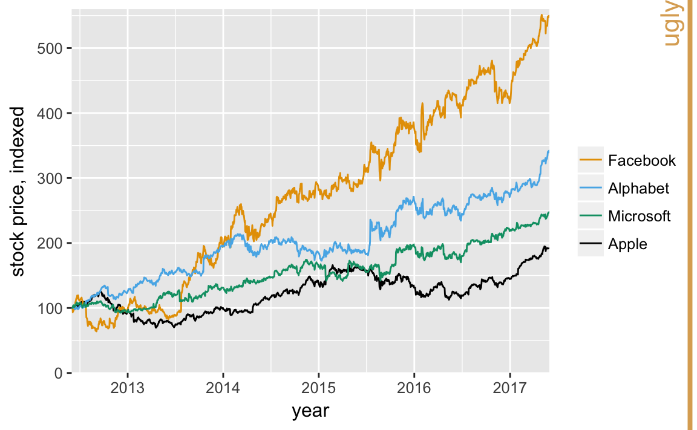
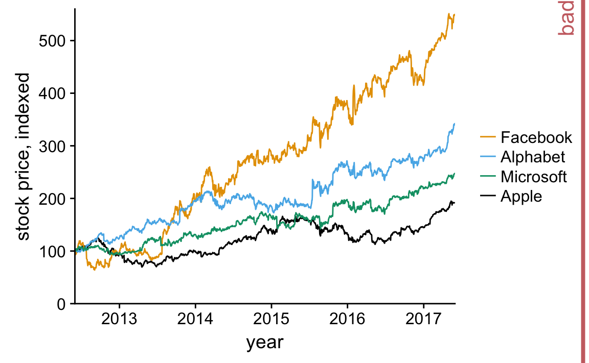
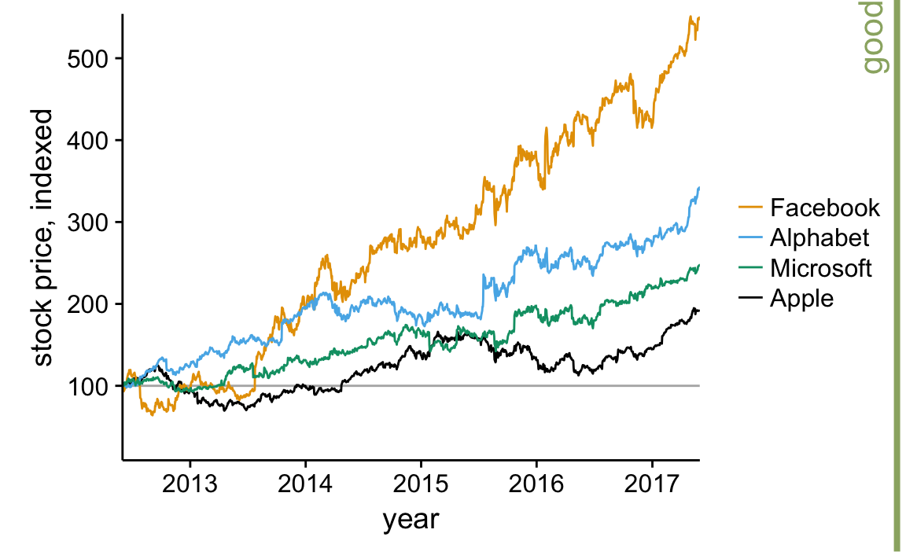
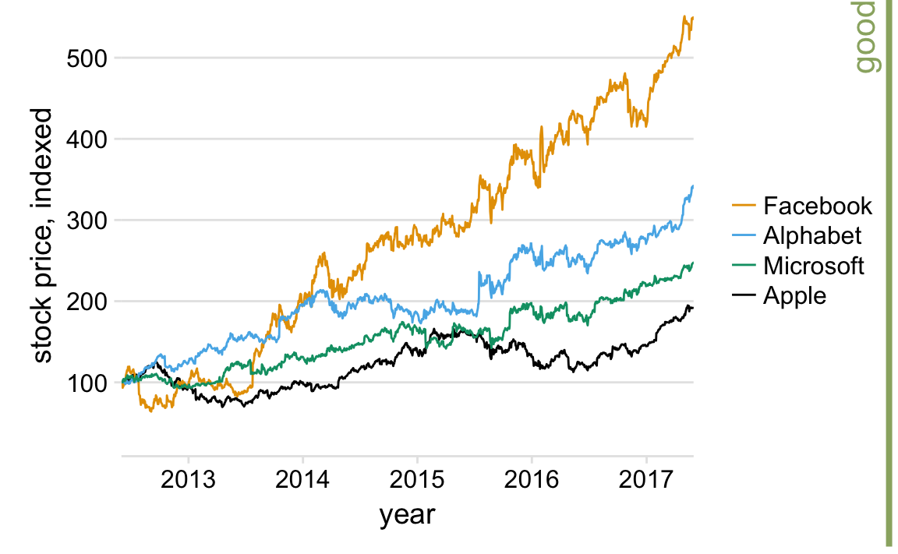
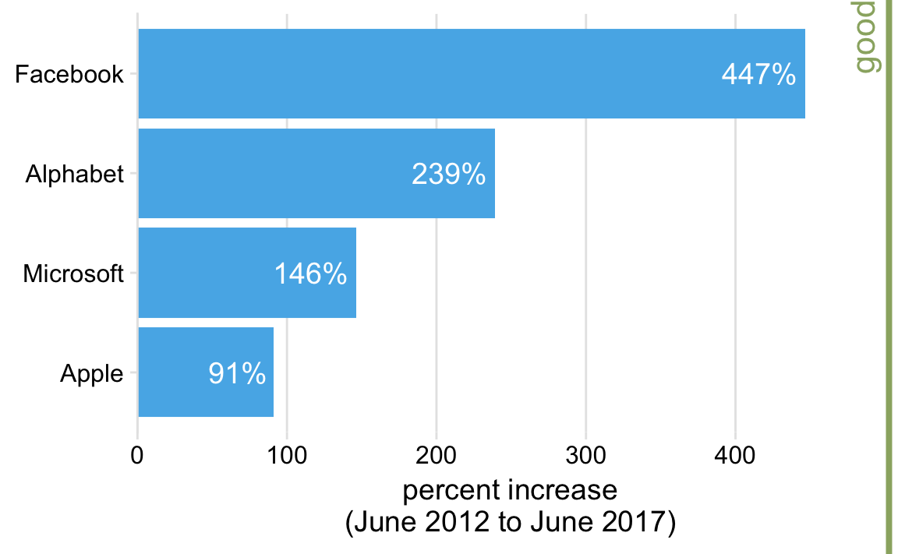
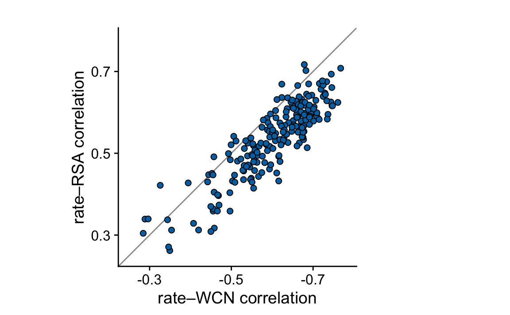
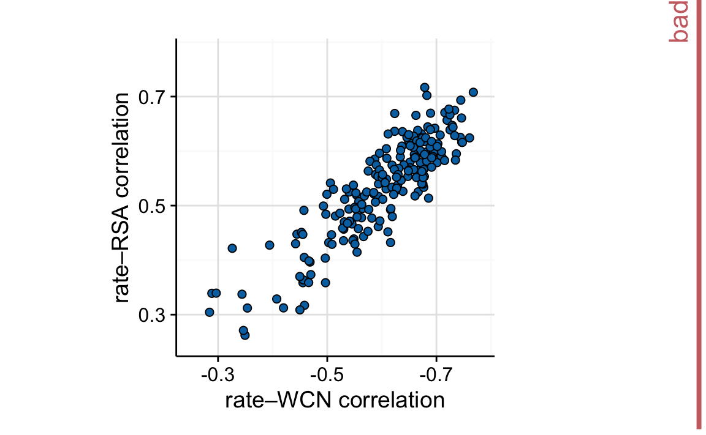

2 Background grids
With the rising popularity of the R package ggplot2, which uses a gray background grid as default, graphs with this style have become widespread. With apologies to Hadley Wickham, for whom I have the utmost respect, I don’t find this style particularly attractive. In general, I find that the gray background detracts from the actual data. As an example, consider this figure, which shows the stock price of four major tech companies, indexed to their value in June 2012:
 The grid is too busy, and the gray background in the legend is distracting.
We could try to remove the grid altogether, but I think that is a worse option:  Now the curves seem to just float in space, and it’s difficult to see where they go. In addition, since all prices are indexed to 100 in June 2012, at a minimum this value should be marked in the plot. Thus, one option would be to add a thin horizontal line at \(y=100\): 
Alternatively, we can use just a minimal grid. In particular, for a plot where we are primarily interested in the change in \(y\) values, vertical grid lines are not needed. Moreover, grid lines positioned at only the major axis ticks will often be sufficient. And, the axis line can be omitted or made very thin. Thus, we arrive at this plot: 
Note that for such a minimal grid, we generally draw the lines orthogonally to direction along which the numbers of interest vary. Thus, if instead of plotting the stock price over time we plot the five-year increase, as horizontal bars, then we will want to use vertical lines instead:  Note that in addition to the light vertical lines, I have also added the actual numerical values that each bar represents. Whenever your plot is meant to display only a small number of key values (like here, four), it makes sense to add the actual numbers to the plot. This substantially increases the amount of information conveyed by your plot without adding much visual noise.
Background grids along both axis directions can make sense for scatter plots where there is no primary axis of interest, in particular if you leave out the axis lines: 
For figures where the relevant comparison is the \(x=y\) line, I prefer to draw a diagonal line rather than a grid. For example, consider the following figure, adapted from Echave, Spielman, and Wilke (2016), which compares two sets of correlations for 209 protein structures. By drawing the diagonal line, we can see immediately which correlations are systematically stronger:
The same observation is much harder to make when the figure has a background grid instead. Thus, even though this figure looks pleasing, I label it as “bad”: 
References
Echave, J., S. J. Spielman, and C. O. Wilke. 2016. “Causes of Evolutionary Rate Variation Among Protein Sites.” Nature Rev. Genet. 17: 109–21.